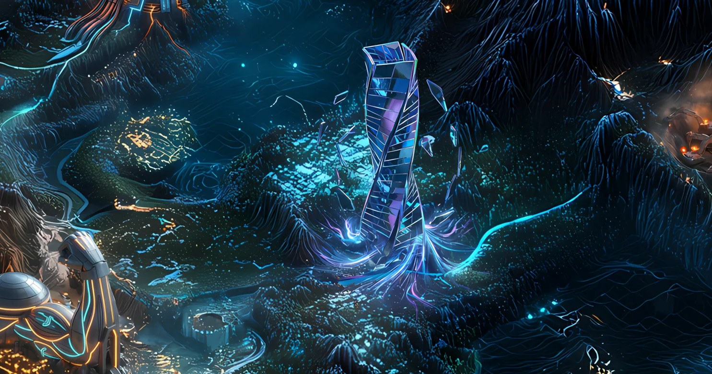

Record // SECURITY PLAYABLE TEARDOWN
ORACLE MIRAGE

One trader drained ~$110M through an oracle, then argued it was a legal trade — and a court later vacated his convictions.
What happened
In October 2022, Avraham Eisenberg manipulated the price oracle behind Mango Markets to inflate his collateral and borrow out roughly $110M. He publicly framed it as a legal 'highly profitable trading strategy.' A jury convicted him of fraud and market manipulation in April 2024, but in May 2025 a federal judge vacated all convictions — citing improper venue and the absence of a material misrepresentation — and prosecutors appealed.
Why Solana remembers it
Oracle manipulation is one of DeFi's defining attack surfaces. Mango turned an abstract risk into a years-long legal saga and a permanent design lesson about where price data comes from.
On the map
A shimmering mirage — a price that looked real long enough to drain a protocol.